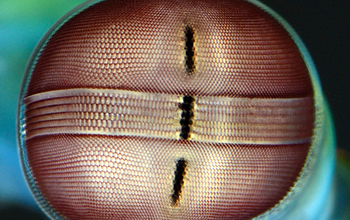

É seu nome científico; estomatópodes, tamarutacas, lacraias-do-mar seriam seus nomes mais amigaveis.
Visão aguçada

Enquanto cachorros possuem 2 receptores de luz em seus olhos, os seres humanos 3, e até mesmo as borboletas com 5, não são nada a seus 16 receptores de luz, permitindo uma vertente de cores muito maior.
Parece um tiro
Como se nao bastasse a visão além do alcance, eles ainda dão inveja a boxeadores de alto calibre, e a um calibre de arma seus socos se comparam.
Um soco dessa unidade absoluta de poder, se compara com um tiro de um rifle calibre 22 (80km/h), o suficiente para evaporar a água que esta nas proximidades de seu soco.